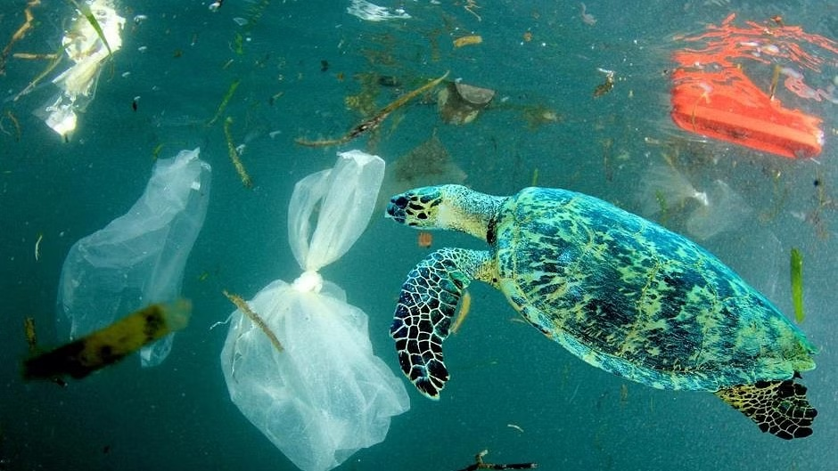
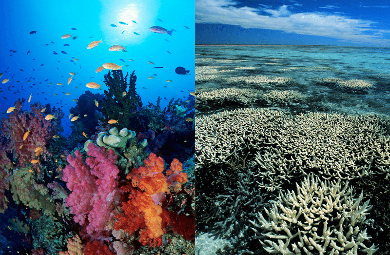
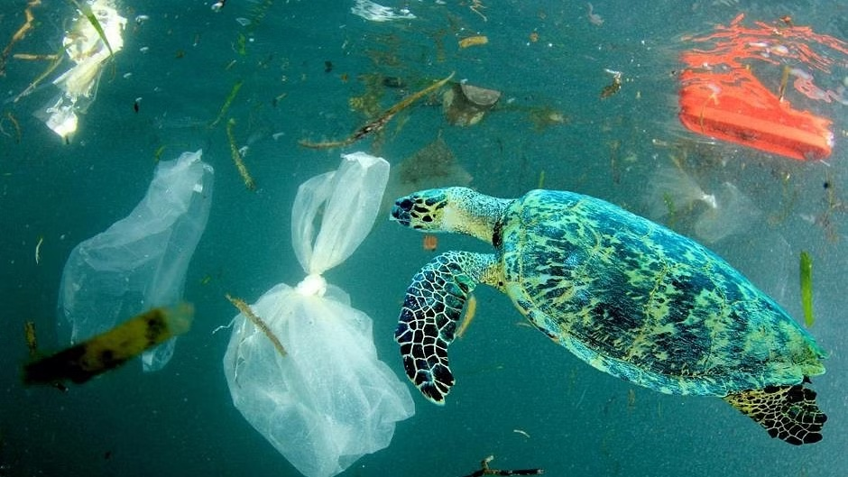
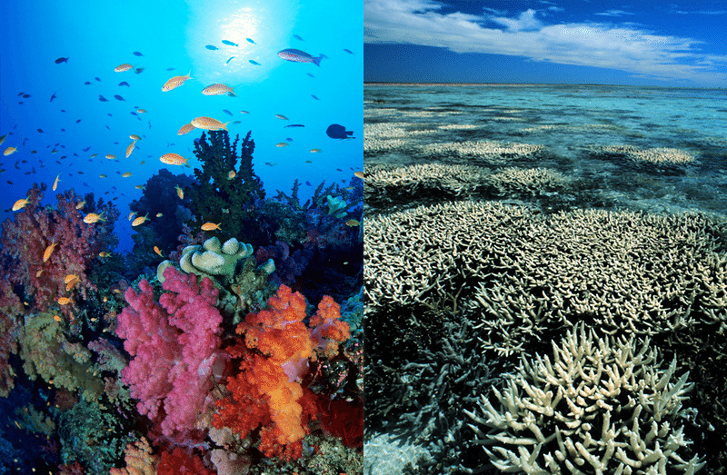

Ocean sustainability is a matter of paramount importance for the well-being of our planet and future generations. Our oceans provide us with invaluable resources, from food and livelihoods to climate regulation and biodiversity. However, the escalating threats of overfishing, pollution, and climate change have put these ecosystems at risk. By signing this petition, you are taking a stand for responsible and ethical practices in ocean management. We urge governments, industries, and individuals to collaborate in protecting our oceans through sustainable fishing, reducing plastic waste, and mitigating climate change. Together, we can ensure the long-term health of our oceans, preserving their beauty, biodiversity, and the livelihoods of countless people who depend on them. Join us in safeguarding the blue heart of our planet for the benefit of current and future generations. Your signature can make a difference, and together, we can be stewards of the oceans, ensuring their sustainability and vitality for all.
🖊️ Mariah from Upland supports bettering our seas.
🖊️ Elijah from Ontario supports bettering our seas.
🖊️ Elias from Hemet supports bettering our seas.
 


